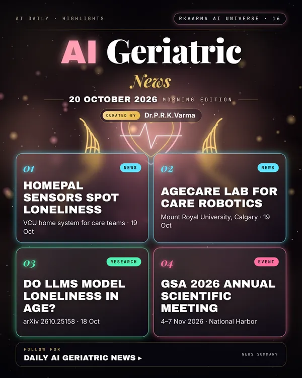

Latest updates · 20 October 2026
In the full issue →Ageing-in-place tech advanced on three continents: VCU's HomePal sensors aim to spot loneliness, Calgary opened an AgeCare lab for AI and robotics in continuing care, and an NIH award funds sensor-and-AI home monitoring in California.
Research, industry & policy
- Home sensor system could spot loneliness in older adults, VCU News · 19 Oct 2026: VCU's HomePal smart-sensor system uses passive home behaviour data and could alert care teams when an older adult may be lonely.
- AgeCare Innovation Lab opens with Mount Royal University, Mount Royal University · 19 Oct 2026: The new lab in Calgary explores AI and robotics so continuing-care staff can spend more time on residents.
- NIH funds the HOME remote-monitoring project, CITRIS and the Banatao Institute · 19 Oct 2026: UC Davis and UC Merced researchers will combine unobtrusive sensors, AI and the I-Care caregiving platform to flag behaviour changes that may signal health problems.
- From smart sensors to AI robots in China's elderly care, People's Daily (Xinhua) · 19 Oct 2026: A look at smart-home alerts, sensors and AI robots now being used in China's elderly care.
Journals & preprints
- Do LLMs Reproduce the Age Gap in Loneliness? Evaluating Survey Simulation against European Survey Data, arXiv 2610.25158 · 18 Oct 2026: Large language models (LLMs) are often used to simulate survey respondents, but matching survey averages does not establish accurate demographic differences.
- Dual Task Vector Merging: Leveraging Emotion and ASR Knowledge for Low-Resource Alzheimer's Disease Detection, arXiv 2610.24870 · 17 Oct 2026: Alzheimer's Disease (AD) detection from speech benefits from both paralinguistic and linguistic cues, yet model training is frequently constrained by limited data.
Conferences, workshops & events
- GSA 2026 Annual Scientific Meeting – AgeTech Track, 4–7 Nov 2026 · National Harbor, MD (Gaylord National): AgeTech sessions 5–7 Nov include ethics of AI for older adults.
- Alzheimer's Insights Summit 4: From AI to Impact, 16 Nov 2026 · Boston (Sheraton Boston, opening day of CTAD): Free half-day summit on AI in Alzheimer's discovery, trials and care.
- AI in Senior Living: Real Progress, Real Pitfalls, Real-Time Demos, 17 Nov 2026 · Online (Zoom): 1-hour CE webinar with a live ChatGPT demo; register by 12 Nov.
Why it matters
Loneliness and silent decline are hard to see; passive sensing could give carers an early signal, provided privacy and consent are designed in.

